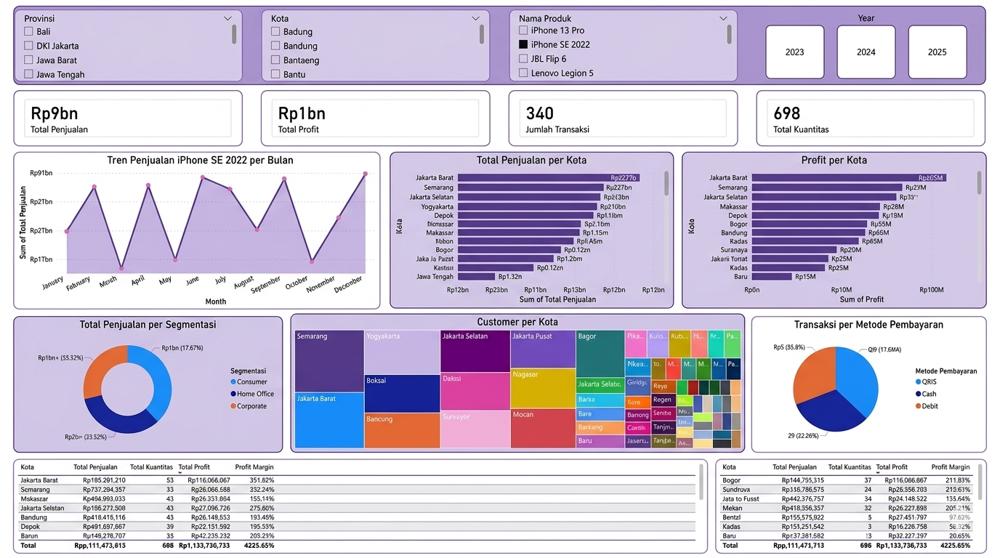
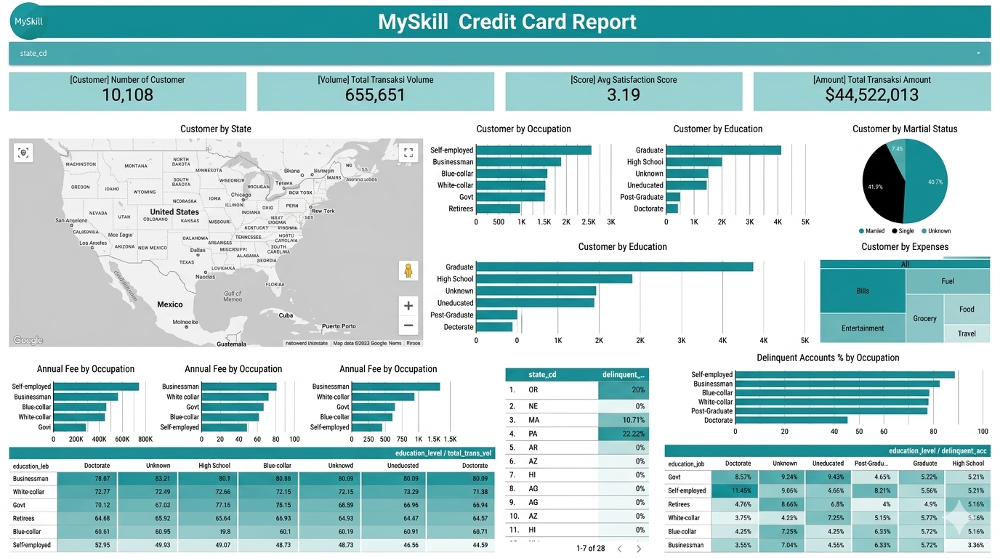
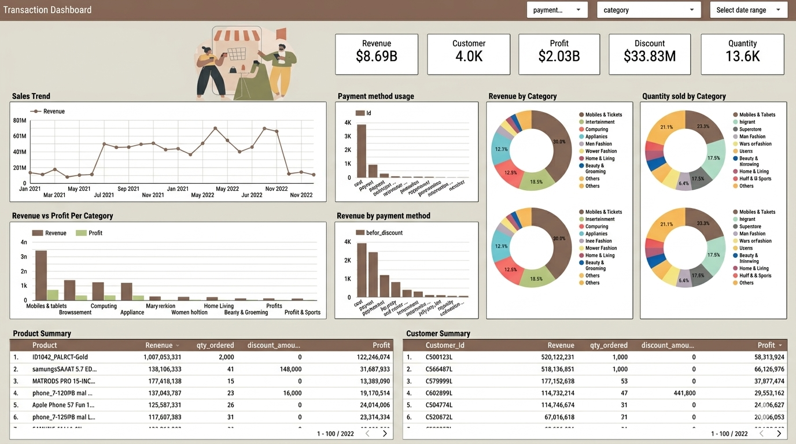
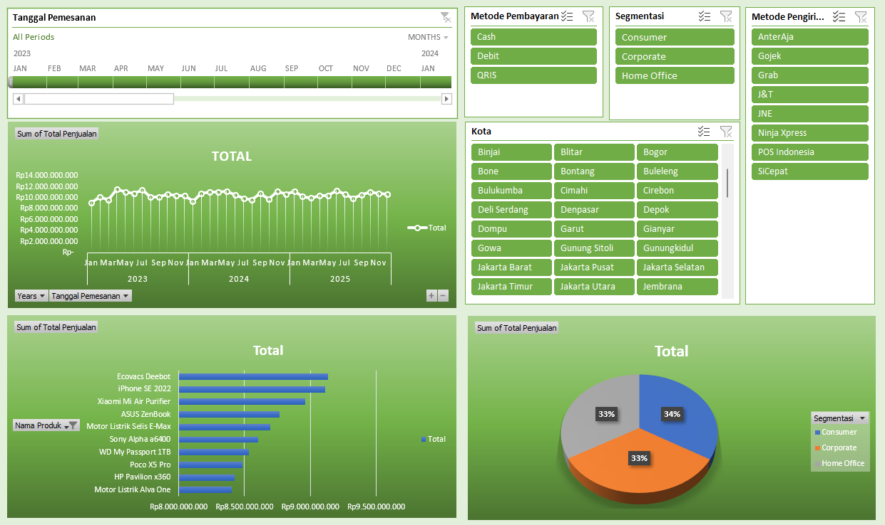
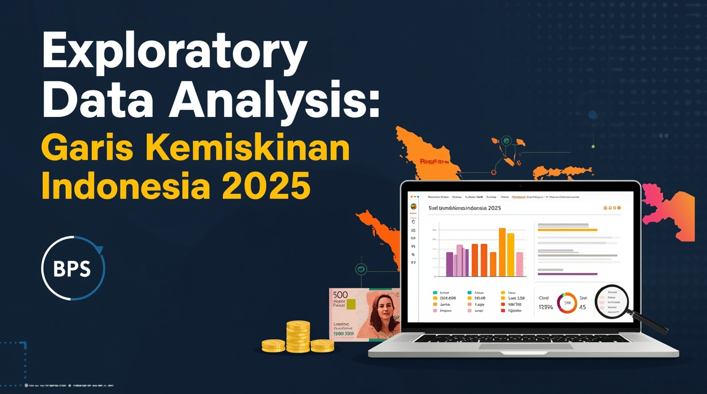

Data analysis projects showcasing my skills and impact

Analyzed iPhone SE 2022 sales performance in Indonesia (2023–2025) using Power BI. Built an interactive dashboard to explore sales trends, regional performance, and customer segmentation, providing insights to support data-driven business decisions.

Analyzed customer data to understand purchasing behavior and customer segmentation. Developed an interactive dashboard in Looker Studio to highlight key insights, helping identify patterns and support targeted marketing strategies.

Analyzed e-commerce transaction data to identify sales trends and customer purchasing behavior. Built an interactive dashboard in Looker Studio to visualize key metrics and support data-driven decision making.
Explored global development trends using Gapminder data, focusing on GDP, life expectancy, and population. Created interactive visualizations with Python and Plotly to uncover patterns and compare changes across countries over time.
Analyzed historical match data to explore patterns and factors influencing team performance in the UEFA Champions League. Used Python (Pandas, Seaborn) to perform exploratory data analysis and visualize key trends.

Performed exploratory analysis on sales data using Microsoft Excel. Built an interactive dashboard with pivot tables and charts to identify sales trends and summarize key business metrics.

Conducted exploratory data analysis on Indonesia’s poverty line data (BPS 2025) to identify trends and regional patterns. Used Python (Pandas, Colab) to process data and generate visual insights for better understanding of socioeconomic conditions.
Analyzed smoking prevalence trends by age group (2021–2023) to identify patterns across different demographics. Utilized Python for data processing and visualization to highlight key insights and support data-driven awareness.